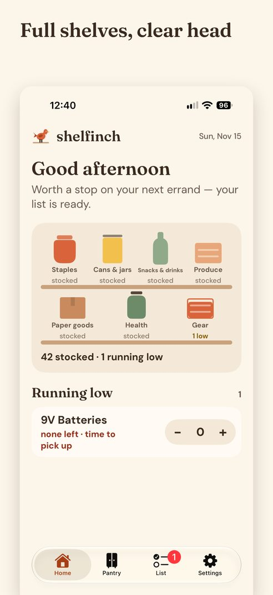
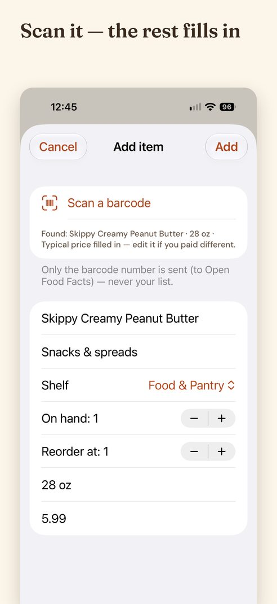
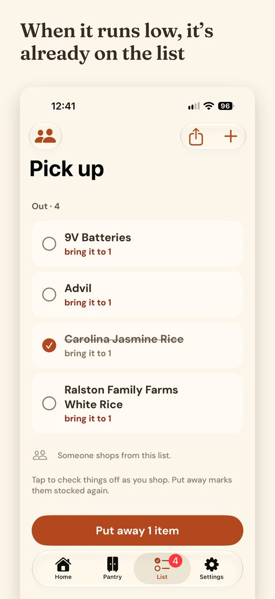
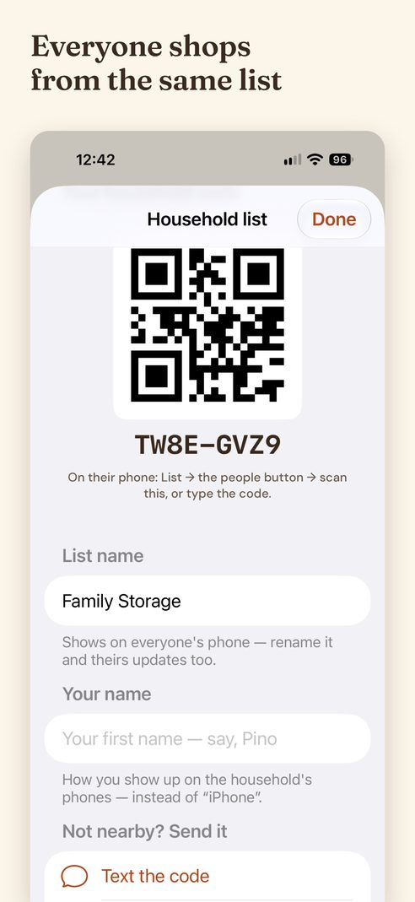
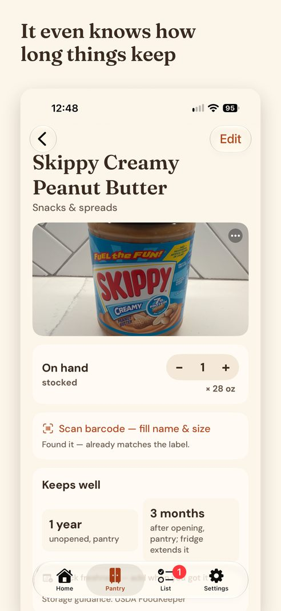
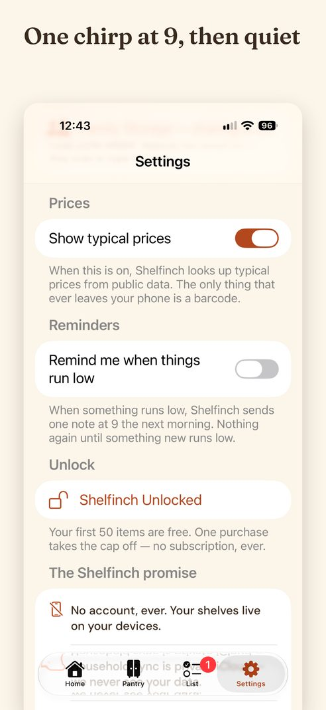
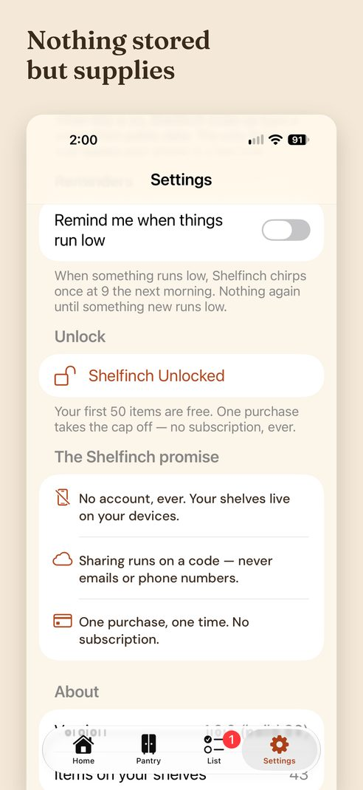

Stocked up, settled down.
Coming to iPhone






Shelfinch keeps track of what's in the house — the pantry, the paper goods, the batteries in the junk drawer — so you're not standing in the store wondering if you already have tomato paste.
Scan a barcode and the name and size fill in. Mark things off as you use them up, and whatever runs low goes on the pick-up list by itself. Share the list with one household code — whoever's at the store checks things off, and the shelves update when the bags get put away.
Here's what makes Shelfinch different: it stores nothing but your supplies. No account, no email, no sign-up. Your shelves live on your phone and in your own iCloud, and sharing runs on a code — never emails or phone numbers. No ads. No tracking. Details in the privacy policy.
Your first 50 items are free. One purchase takes the cap off for the whole household — Family Sharing included, no subscription, ever.
Questions, trouble, ideas? Write to support@shelfinch.app and a human (the one who makes Shelfinch) will get back to you.
Does scanning a barcode send anything? Only the barcode number goes to the Open Food Facts public database to suggest a name — never your list, never anything about you.
Can I get my data out? Yes — Shelfinch imports and exports plain CSV. Your inventory is yours.